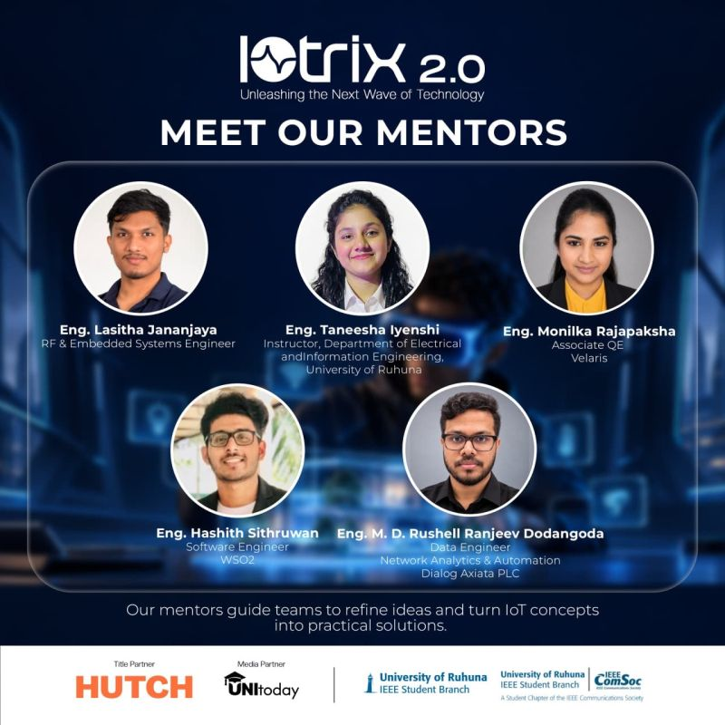
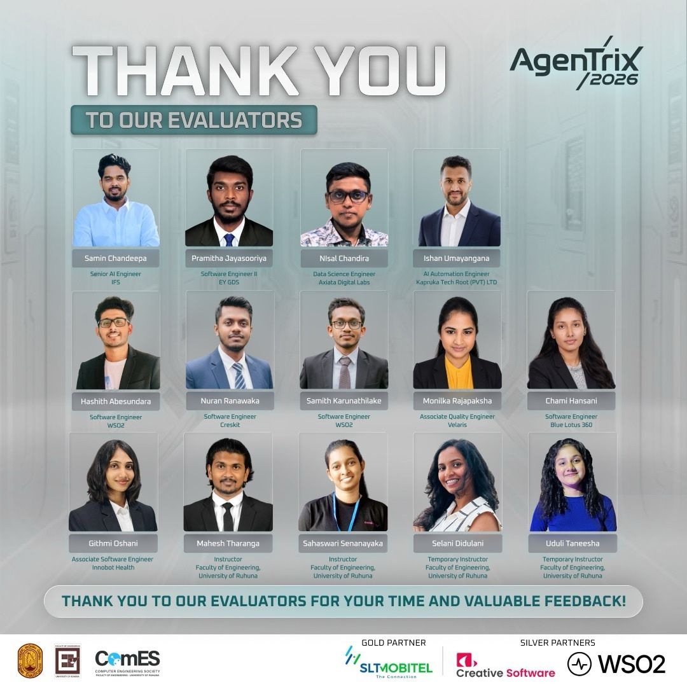
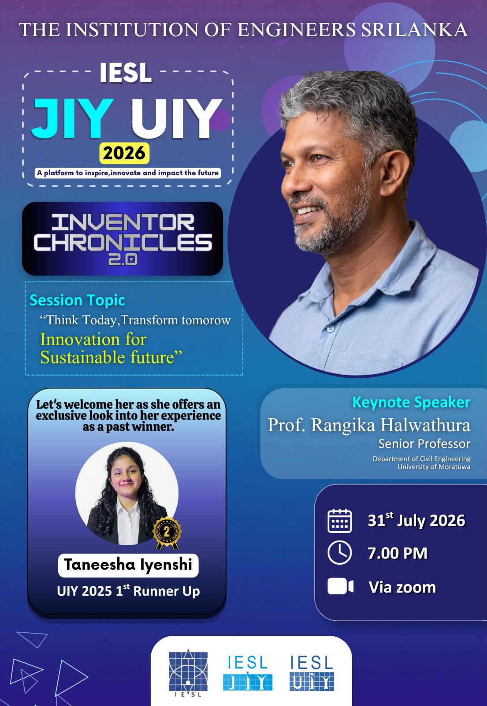
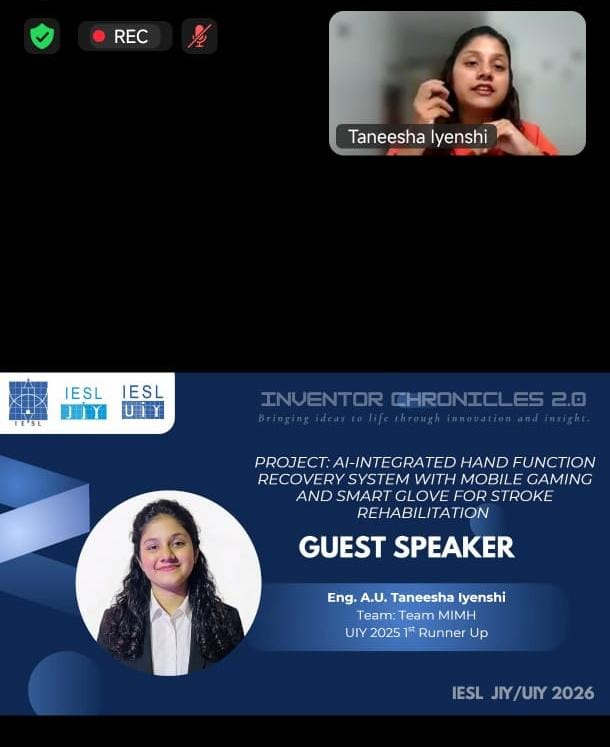
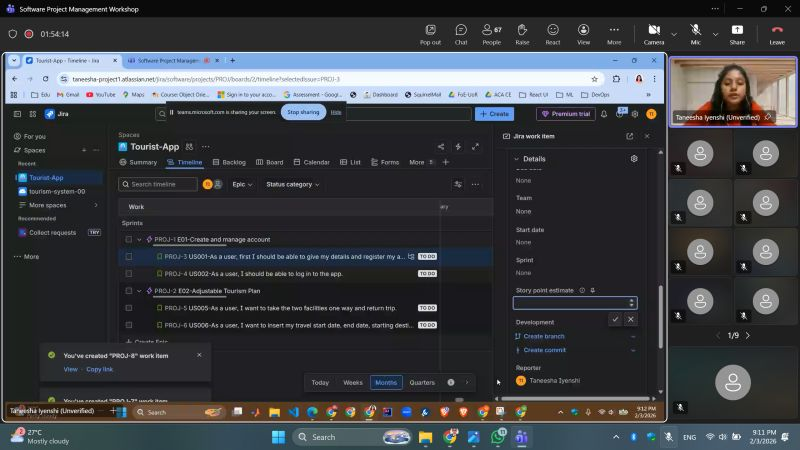
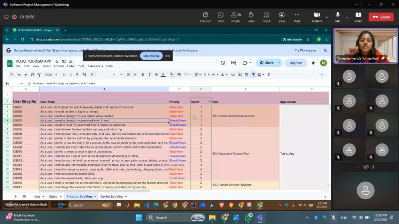
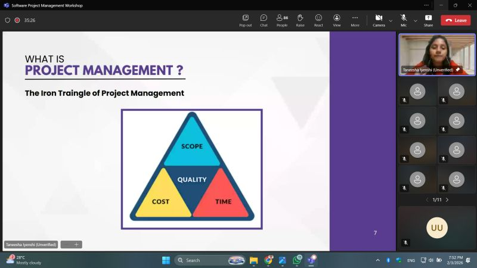

Volunteering & Mentorship
A curated summary of post-university volunteering contributions, technical mentorship, community leadership, and student outreach.
Technical Mentor — IoTrix 2.0 (IoT Innovation & Hackathon)
Department of Electrical and Information Engineering, University of RuhunaAppointed as an official Technical Mentor for IoTrix 2.0, guiding student engineering teams through hardware-software integration, cloud connectivity, and transforming conceptual Internet of Things (IoT) ideas into functional, practical engineering solutions alongside industry mentors.
- • IoT Solution Architecture: Advising teams on microcontroller selection, sensor interfacing, and embedded system reliability.
- • Data & Cloud Integration: Guiding real-time telemetry ingestion, MQTT/HTTP communications, and dashboard reporting.
- • Prototype Refinement: Assisting student innovators in debugging embedded firmware and structuring compelling technical demonstrations.

Technical Evaluator & Judge — AgenTrix 2026 (Agentic AI Competition)
Computer Engineering Society (CES), University of RuhunaServed as an expert Technical Evaluator and Judge for AgenTrix 2026, a premier Agentic AI competition organized by the Computer Engineering Society. Evaluated competitive student teams constructing autonomous agent systems, reviewing technical design, multi-agent orchestration, and creative AI problem-solving capabilities.
- • Agentic AI Architecture Review: Assessing autonomous agent workflows, tool integration, vector storage, and prompt execution pipelines.
- • Technical Feedback & Mentorship: Providing teams with structured feedback on model accuracy, edge-case handling, and software scalability.
- • Community Building: Fostering student innovation and technical excellence within the rapidly growing AI ecosystem.

IESL JIY UIY – Inventor Chronicles 2.0 (Special Experience Sharing Session)
Institution of Engineers Sri Lanka (IESL JIY & UIY Committees)Delivered a special experience sharing session at Inventor Chronicles 2.0, an inspiring evening of innovation and learning organized by IESL. Shared firsthand insights from winning UIY 2025 honors, detailing the engineering innovation journey, competition strategies, and practical advice for aspiring undergraduate inventors alongside Keynote Speaker Prof. R. U. Halwathura (University of Moratuwa).
- • Innovator's Journey: Translating bold engineering concepts into functional, high-impact biomedical prototypes.
- • UIY Competition Insights: Pitching technical inventions, navigating evaluation criteria, and managing prototype development.
- • Empowering Student Inventors: Actionable guidance on sustainability, IP awareness, and transforming academic ideas into real-world impact.


Empowering Future Engineers with Practical Project Management in Software Industry
Software Project Module — 24th Batch (3rd Year Undergraduates), University of RuhunaInvited by Ms. Yugani Gamlath to conduct a specialized online workshop for 3rd-year engineering undergraduates. The session focused on bridging academic engineering projects with real-world software industry practices, emphasizing how structured project management directly drives successful software delivery.
- • Project Fundamentals & The Iron Triangle: Practical tradeoffs across Scope, Time, and Cost in software delivery.
- • Agile & Scrum Methodologies: Iterative delivery principles, Scrum team roles, artifacts, and sprint ceremonies.
- • Hands-On Jira Implementation: Live demonstration mapping Epics, User Stories, Tasks, Bugs, Story Points, and active Sprint boards to enforce team accountability.



Technical Mentor & Workshop Instructor
Community Tech Initiatives & Academic Developer GroupsConducting interactive workshops and mentoring undergraduates and early-career developers in AI/ML fundamentals, data engineering pipelines, and security best practices.
Advisory Member & Session Chair
IEEE Professional Chapter & Student Branch MentorshipAdvising student executive committees on event planning, technical webinar curation, and fostering academia-industry connections for engineering students.
Secretary — IEEE Industrial Applications Society (IAS)
Student Branch Chapter, University of RuhunaLed chapter operations, coordinated executive board meetings, structured technical webinars and hands-on workshops to boost student engagement across the department.
Technical Content Creator & Open Knowledge Advocate
Medium / Personal Technical BlogAuthoring detailed developer guides breaking down mathematical concepts, data engineering tools, and machine learning libraries (Pandas, NumPy, Scikit-learn, OpenCV) for the global tech community.
Junior Treasurer — IEEE Industrial Applications Society (IAS)
Student Branch Chapter, University of RuhunaManaged financial budgeting, expense accounting, and transparent allocation of chapter resources for student engineering projects and events.
Event Moderator
Career Guidance Unit & IEEE Student Branch, University of RuhunaModerated technical webinars, career networking forums, and panel discussions with industry leaders and academic experts.
Membership & Recruitment Lead — IEEE Computer Society
Student Branch Chapter, University of RuhunaDrove chapter growth through targeted recruitment drives, technical onboarding workshops, and peer mentoring sessions.